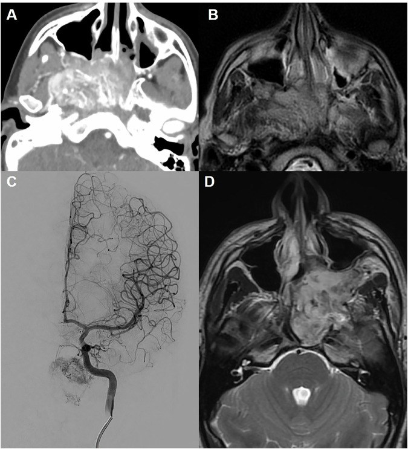
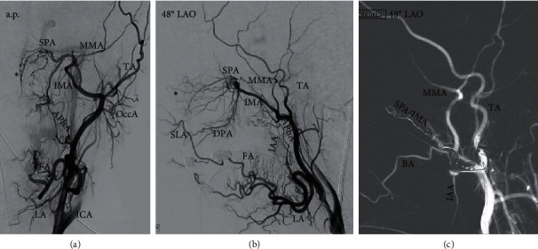
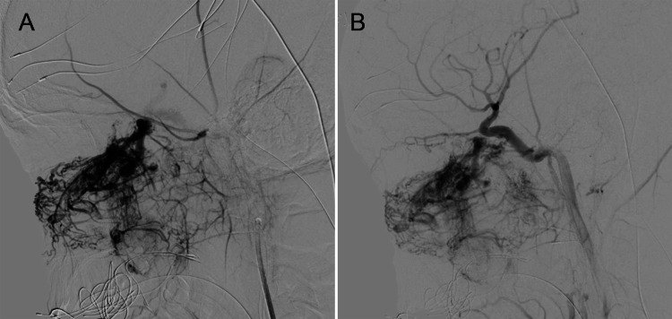

743 — Chảy máu cam nặng/tái diễn ở trẻ: nội soi, CTA, DSA và nút mạch / Severe paediatric epistaxis
Tags: pattern:chay-mau vung:mui vung:dau-co score:Fisch-JNA protocol:CTA-DSA-chay-mau-cam
Mức chắc chắn (certainty): tổng hợp y văn (literature synthesis) — nhóm tự biên từ y văn mở (Eur Radiol 2026, Radiol Res Pract 2020, Cureus 2021, Int Arch Otorhinolaryngol 2022, J Clin Med 2026), đối chiếu khuyến cáo ESR/ACR và AAO mà bài gốc trích dẫn; không gắn một ca nguyên văn duy nhất.
1. Tổng quan bệnh học – cơ chế hình ảnh
- Vì sao trẻ khác người lớn: 90% chảy máu cam ở trẻ là thể TRƯỚC, nguồn từ đám rối Kiesselbach (vùng Little) ở vách ngăn trước — nơi hội tụ nhánh động mạch sàng trước, động mạch khẩu cái lớn, động mạch mặt (môi trên); niêm mạc mỏng, dễ tổn thương do ngoáy mũi, không khí khô, viêm mũi dị ứng. Chảy máu thể SAU chỉ 5–10%, từ đám rối Woodruff (thành sau – sàn mũi), khó cầm và thường gặp ở người lớn hơn (PMC13282215).
- Tần suất: khoảng 60% dân số có ít nhất một lần chảy máu cam, chỉ 6% cần chăm sóc y tế; ở trẻ ngoại trú, chảy máu cam chiếm 1/300 lượt khám, 84% dưới 12 tuổi, gần một nửa dưới 6 tuổi (PMC7455835, PMC9122762). Khoảng 6% các ca cần can thiệp vượt quá đốt điện/nhét bấc (PMC13282215).
- Điểm mấu chốt ở trẻ — chảy máu cam có thể là CỬA VÀO bệnh hệ thống: trong 100 trẻ khám vì chảy máu cam, 57 trẻ có thêm biểu hiện chảy máu khác, 47 trẻ được chẩn đoán rối loạn đông máu thực sự; điểm chảy máu (bleeding score) ≥ 2 có giá trị gợi ý nguyên nhân hệ thống (PMC9122762). Vì vậy câu hỏi đầu tiên không phải "chụp gì" mà là "chảy máu đơn thuần hay kèm bầm da, chảy máu răng, tiền sử gia đình?"
- Ba nguyên nhân "phải nghĩ tới" khi trẻ chảy máu cam nặng/tái diễn:
- U mạch mũi hầu (juvenile nasopharyngeal angiofibroma — JNA): trẻ nam, tuổi dậy thì (12–16, trung bình 14), chảy máu cam tái diễn một bên + nghẹt mũi; khối giàu mạch xuất phát từ lỗ bướm–khẩu cái (PMC8294459).
- Bệnh u mạch máu di truyền (hereditary haemorrhagic telangiectasia — HHT / Osler–Weber–Rendu): di truyền trội NST thường, ENG/ACVRL1/SMAD4/GDF2, tần suất 1/5.000–1/8.000; chảy máu cam tái diễn + giãn mạch niêm mạc (môi, lưỡi) + dị dạng động–tĩnh mạch tạng (phổi, não, gan) (PMC12608258).
- Rối loạn đông máu (bệnh von Willebrand, giảm tiểu cầu, hemophilia) — xét nghiệm trước khi can thiệp mù.
- TẠI SAO đọc được trên hình ảnh (vật lý):
- CTA: thuốc cản quang thì động mạch 20–30 giây, lát mỏng ≤ 1 mm (tái tạo 0,25–3 mm), liều tham chiếu CTDIvol 4–10 mGy, DLP 100–250 mGy·cm cho vùng mũi–xoang; CTA định vị nguồn chảy và lập kế hoạch nút mạch — mô hình mạch của hốc mũi chủ yếu từ động mạch hàm trong (IMA) → động mạch bướm–khẩu cái (SPA) (nhánh động mạch cảnh ngoài), trong khi trần mũi do động mạch sàng trước/sau từ động mạch mắt (nhánh động mạch cảnh trong) (PMC13282215, PMC7455835).
- DSA: hình nền đã trừ cho thấy blush của khối u, thoát mạch hoạt tính (đổi hình theo thì) vs giả phình (giữ hình, đổ đầy rồi xả) — đây là phân biệt quyết định kỹ thuật can thiệp.
- MRI: mô mềm và lan nội sọ; JNA có đường dòng chảy (flow void) trong khối và ngấm thuốc mạnh — nhưng không thay thế DSA để đánh giá mạch nuôi.
2. Mẫu hình + chẩn đoán phân biệt theo vị trí (gamut)
- Chảy máu vùng TRƯỚC (vách ngăn, vùng Little): vô căn/tự phát, chấn thương ngón tay, khô niêm mạc, viêm mũi dị ứng, dị vật mũi, polyp, u máu vách ngăn, rối loạn đông máu nhẹ. → Không cần chụp nếu đơn thuần, một bên rõ ràng, đáp ứng đốt/nhét bấc.
- Chảy máu vùng SAU (Woodruff, SPA): vô căn ở người lớn, tăng huyết áp, chống đông/chống kết tập tiểu cầu, sau phẫu thuật mũi, giả phình SPA/IMA sau chấn thương.
- Chảy máu TRẦN mũi / sàng trước–sau: chấn thương mặt, vỡ nền sọ, tổn thương động mạch cảnh trong, sau phẫu thuật xoang — nguy cơ chảy máu từ tuần hoàn cảnh trong, nút mạch sai = đột quỵ/mù.
- Chảy máu MŨI HẦU / một bên + nghẹt mũi ở trẻ nam dậy thì: JNA, ung thư cơ vân (rhabdomyosarcoma), u lympho, u nguyên bào khứu giác (esthesioneuroblastoma), polyp hậu mũi.
- Chảy máu LAN TỎA niêm mạc, tái diễn nhiều năm: HHT, rối loạn đông máu, bệnh thận mạn (tăng huyết áp + ure), thuốc.
- Mnemonic "KISS–JHH": Kiesselbach (trước, trẻ) · IMA/SPA (nguồn sau) · Sàng trước/sau (trần, cảnh trong) · Systemic (đông máu, HHT) — cộng JNA (nam dậy thì) · HHT · Huyết áp/thuốc.
3. Bảng so sánh phân biệt (ma trận đối chiếu)
| Thực thể (entity) | Hình ảnh điển hình (nội soi/CT/CTA/MRI/DSA) | Chốt vào (rule-in) | Chốt loại (rule-out) | Gợi ý xác nhận |
|---|---|---|---|---|
| Chảy máu cam trước vô căn | Nội soi: điểm rỉ máu ở vùng Little, không khối; CT bình thường | Chảy máu một bên rõ ở vùng Little, đáp ứng đốt/nhét bấc, không thiếu máu | Khối một bên, chảy máu sau, thiếu máu nặng → không phải vô căn | Không chụp; điều trị bảo tồn |
| JNA | CTA: khối ngấm mạnh, giãn rộng lỗ bướm–khẩu cái, đẩy thành sau xoang hàm (Holman–Miller); MRI: flow void; DSA: blush từ IMA/SPA ± nhánh cảnh trong | Nam 12–16 tuổi + chảy máu một bên + khối mũi hầu ngấm mạnh, giãn lỗ bướm–khẩu cái | Nữ, tuổi nhỏ, khối không ngấm, không giãn lỗ → nghĩ polyp/u khác | CTA + MRI; không sinh thiết; DSA khi chuẩn bị nút mạch |
| HHT | Nội soi: nhiều giãn mạch dạng đốm ở vách trước/mũi; CT phổi/gan: AVM; MRI não: AVM | Chảy máu tái diễn + giãn mạch môi/lưỡi + ≥ 3 tiêu chuẩn Curaçao hoặc đột biến gen | Không giãn mạch, không tiền sử gia đình, chảy máu một lần → ít nghĩ HHT | Xét nghiệm ENG/ACVRL1/SMAD4/GDF2; tầm soát AVM phổi–não |
| Rối loạn đông máu | Hình ảnh mũi bình thường; PT/aPTT/TXĐ, von Willebrand, tiểu cầu bất thường | Bleeding score ≥ 2 + bầm da/chảy máu răng + tiền sử gia đình | Công thức – đông máu bình thường, chảy máu khu trú → loại | Xét nghiệm đông máu trước can thiệp |
| Giả phình ĐM cảnh trong/SPA sau chấn thương | CTA: túi đối quang giữ hình cạnh ĐM; DSA: đổ đầy–xả, không đổi hình theo thì | Chấn thương mặt/nền sọ + chảy máu ồ ạt tái phát | Thoát mạch hoạt tính (đổi hình, lan thì muộn) → tổn thương mạch đang chảy | DSA là chuẩn; nút mạch/coil/stent |
| U cơ vân / u lympho mũi hầu | Khối không giàu mạch điển hình, phá xương, hạch cổ; MRI hạn chế khuếch tán | Khối phá xương + hạch cổ + trẻ nhỏ | Khối ngấm mạnh lan tỏa, giãn lỗ bướm–khẩu cái → JNA | Sinh thiết (khác JNA); PET/CT giai đoạn |
| Dị vật / polyp / u máu vách ngăn | Nội soi thấy trực tiếp; CT: hình khối nhỏ, không phá xương | Nội soi thấy tổn thương khu trú | Nội soi sạch, chảy máu từ nguồn mạch lớn → tìm nguồn sâu | Nội soi là chuẩn; CT chỉ khi cần |

(A) CTA trục: khối ngấm mạnh ở mũi hầu; (B, D) MRI T2: khối mô mềm lan rộng, giãn lỗ bướm–khẩu cái, đẩy ra trước; (C) DSA: blush mạch nuôi từ động mạch hàm trong. Nguồn: Péporté ARJ et al. — Eur Radiol 2026 (PMC13282215), CC BY 4.0.4. Protocol chụp + phân độ + can thiệp
Chuỗi xử trí (theo ESR 2026 và AAO):
- Bước 0 — cầm máu và hỏi bệnh: ép mũi, chống sốc nếu mất máu; hỏi thời gian, một/bhai bên, tái diễn, thuốc, tiền sử gia đình, bầm da; cân nặng để tính liều và lượng máu mất.
- Bước 1 — nội soi mũi (bắt buộc): xác định trước/sau, tìm khối một bên, giãn mạch, dị vật. Đây là "chẩn đoán hình ảnh" đầu tay — không cần CT cho chảy máu trước đơn thuần (Khuyến cáo mạnh, mức chứng cứ 2a/I) (PMC13282215).
- Bước 2 — CT/CTA khi: chảy máu nặng, tái diễn, thể sau, nghi khối/u, chấn thương, hoặc chuẩn bị can thiệp. CTA lát ≤ 1 mm, thì động mạch; tái tạo đa bình diện; giảm liều theo ALARA ở trẻ (CTDIvol 4–10 mGy, DLP 100–250 mGy·cm).
- Bước 3 — MRI khi nghi JNA/u mô mềm/lan nội sọ: T1, T2, T1 fat-sat sau tiêm; JNA có flow void và ngấm mạnh.
- Bước 4 — DSA ± nút mạch: chỉ đặt khi đã xác định nguồn từ động mạch cảnh ngoài và có ý định điều trị. Mục tiêu: SPA và đoạn xa IMA (đôi khi cả động mạch mặt vì vòng nối).
- Bước 5 — phẫu thuật (nội soi cầm máu, thắt SPA, cắt u) khi nút mạch thất bại/không phù hợp.
Số liệu can thiệp (để tư vấn gia đình):
- Nút mạch chảy máu cam sau: kiểm soát ~87%, biến chứng nhẹ 20%, biến chứng nặng (hoại tử, liệt, mù, đột quỵ) 2,1–3,8% (PMC13282215). Loạt 141 thủ thuật chuẩn hóa (bột vi cầu 500 µm + coil cho SPA/IMA xa, tránh động mạch màng não giữa): 95,1% cầm máu ngay, 90,2% thành công chung, 4,8% tái chảy trong 5 ngày, 13,0% tái chảy sau 5 ngày, không có biến chứng thần kinh nặng (PMC7455835).
- "Vòng nối nguy hiểm" phải loại trừ trước khi bơm hạt: động mạch lỗ tròn, động mạch màng não giữa, động mạch màng não phụ, động mạch sàng, động mạch hầu lên, vòng nối mặt–mắt — bơm nhầm → mù/đột quỵ (PMC7455835).
- JNA: nút mạch trước mổ 24–48 giờ; loạt 5 trẻ 12–16 tuổi, giảm tưới máu 86,0 ± 9,7%, cắt u Fisch II–IIIa với mất máu < 700 mL, không biến chứng (PMC8294459).
- HHT: bậc thang điều trị — giữ ẩm niêm mạc → acid tranexamic/đốt laser → bevacizumab toàn thân → tạo hình niêm mạc/bịt mũi (PMC12608258). Nút mạch chỉ dành cho ca kháng trị, và hiệu quả giảm dần vì mạch tái tạo.
Phân độ JNA (Fisch) — dùng để chọn đường mổ và dự báo chảy máu:
flowchart TD
A[Trẻ chảy máu cam nặng hoặc tái diễn] --> B[Nội soi mũi]
B --> C{Khối một bên hoặc chảy máu sau?}
C -->|Không| D[Đốt hoặc nhét bấc, điều trị nguyên nhân; xét nghiệm đông máu nếu có dấu hiệu hệ thống]
C -->|Có| E[CTA lát ≤ 1 mm + MRI nếu nghi u]
E --> F{Tổn thương giàu mạch từ cảnh ngoài?}
F -->|Không| G[Tìm nguồn cảnh trong, chấn thương, rối loạn đông máu]
F -->|Có| H{DSA thấy blush hoặc thoát mạch?}
H -->|Có| I[Nút mạch SPA và đoạn xa IMA, kiểm tra vòng nối nguy hiểm trước khi bơm hạt]
H -->|Không| J[Tiếp tục nội soi cầm máu hoặc thắt mạch ngoài]
I --> K{JNA?}
K -->|Có| L[Fisch I–II: nội soi; III–IVa: nút mạch 24–48 giờ trước mổ + phẫu thuật]
K -->|Không| M[Kiểm soát chảy máu, điều trị nguyên nhân nền]
- Fisch I: giới hạn trong hốc mũi/mũi hầu. II: lan vào hố khoeo–khẩu cái, xoang hàm, xoang bướm. IIIa: lan hố dưới thái dương chưa vào ổ mắt; IIIb: đã vào ổ mắt. IVa: lan nội sọ ngoài màng cứng; IVb: nội sọ trong màng cứng — nhóm tiên lượng nặng nhất, cân nhắc kỹ chỉ định mổ.
5. Biến thể bình thường và cạm bẫy
- Nhét bấc gây giả tổn thương: bấc/merocel tạo bóng khí và hình giả khối trên CT; đọc lại sau khi rút bấc, hoặc dùng MRI để phân biệt.
- "Không thấy gì trên CTA" không loại trừ chảy máu: CTA âm tính vẫn có thể do chảy máu ngắt quãng; DSA vẫn là chuẩn khi lâm sàng nặng. Ngược lại, DSA âm tính thì đừng nút mạch — nút "mù" chỉ thêm nguy cơ.
- Phân biệt thoát mạch vs giả phình: thoát mạch hoạt tính đổi hình và lan ở thì muộn (đang chảy); giả phình giữ hình, đổ đầy rồi xả (nguy cơ vỡ về sau). Cả hai đều cần can thiệp nhưng kỹ thuật khác nhau (hạt vs coil/stent).
- Cấm sinh thiết JNA: khối giàu mạch, sinh thiết có thể gây chảy máu không cầm — chẩn đoán bằng CTA/MRI/DSA (PMC13282215).
- HHT ở trẻ: tiêu chuẩn Curaçao KÉM tin cậy vì chảy máu cam phổ biến ở mọi trẻ và giãn mạch xuất hiện muộn; trẻ có tiền sử gia đình nên xét nghiệm gen + tầm soát AVM phổi/não thay vì chờ đủ tiêu chuẩn (PMC12608258). Ca 15 tuổi có AVM não, em gái 7 tuổi tử vong do xuất huyết não — không được bỏ qua tiền sử gia đình (PMC12954979).
- Đừng quy mọi chảy máu tái diễn cho "vô căn": điểm chảy máu ≥ 2 kèm bầm da/chảy máu răng → xét nghiệm đông máu trước khi đốt (PMC9122762).
- Bẫy liều ở trẻ: giảm liều cản quang theo cân nặng và hạn chế CT lặp; ưu tiên nội soi và MRI khi có thể — nhưng không trì hoãn CTA ở ca chảy máu ồ ạt nghi tổn thương mạch lớn.
6. Tự lượng giá — Blind Quiz
Ca 1 — Nam 14 tuổi, chảy máu cam tái diễn bên trái 6 tháng, nghẹt mũi trái tăng dần, thiếu máu nhẹ. Nội soi: khối đỏ ở mũi hầu trái.
- Câu hỏi: Ba dấu hiệu hình ảnh gợi ý chẩn đoán? Vì sao không sinh thiết? Bước điều trị tiếp theo?
Bấm để hiện đáp án
- Findings: khối ngấm thuốc mạnh trên CTA, lan từ lỗ bướm–khẩu cái vào mũi hầu, giãn rộng lỗ bướm–khẩu cái/khe chân bướm–hàm, T2 có flow void; DSA có blush mạch nuôi từ động mạch hàm trong.
- Chẩn đoán: JNA — u mạch lành tính nhưng chảy máu nhiều, điển hình nam dậy thì.
- Vì sao không sinh thiết: nguy cơ chảy máu ồ ạt; chẩn đoán dựa trên hình ảnh.
- Điều trị: nút mạch trước mổ 24–48 giờ rồi cắt u (nội soi/qua đường miệng tùy Fisch); ca Fisch II–IIIa trong loạt mất máu < 700 mL.
- Nguồn: Péporté ARJ et al., Eur Radiol 2026 (PMC13282215), CC BY 4.0.
Ca 2 — Nam 15 tuổi, chảy máu cam tái diễn nhiều năm, mẹ và nhiều người trong gia đình cũng chảy máu cam. Da niêm mạc có vài đốm đỏ ở môi.

- Câu hỏi: Chẩn đoán nghĩ tới? Cần tầm soát gì ngoài mũi? Vì sao không nút mạch ngay?
Bấm để hiện đáp án
- Findings: giãn mạch niêm mạc + chảy máu tái diễn + tiền sử gia đình → HHT. DSA cho thấy mạng mạch tăng sinh của niêm mạc mũi được nút bằng hạt/coil tại IMA–SPA.
- Tầm soát bắt buộc: AVM phổi (CTA ngực) và AVM não (MRI) — vì AVM não/phổi có thể gây xuất huyết hoặc áp-xe não; trẻ có tiền sử gia đình nên xét nghiệm gen (ENG/ACVRL1/SMAD4/GDF2).
- Vì sao không nút mạch ngay: HHT là bệnh niêm mạc lan tỏa, nút mạch chỉ là bậc cuối cho ca kháng trị; bậc thang là giữ ẩm → acid tranexamic/đốt laser → bevacizumab → tạo hình niêm mạc/bịt mũi. Ảnh là ca người lớn (49 tuổi) dùng minh họa kỹ thuật.
- Nguồn: Franke M et al., Radiol Res Pract 2020 (PMC7455835), CC BY.
Ca 3 — Nam 13 tuổi, JNA Fisch IVa, được nút mạch trước mổ. So sánh hai lần chụp mạch.

- Câu hỏi: (A) và (B) khác nhau ở đâu? Làm sao biết nút mạch "đủ"? Khi nào mổ?
Bấm để hiện đáp án
- Findings: (A) trước nút: blush dày đặc của khối; (B) sau nút: mất blush, chỉ còn mạch nuôi bình thường của vùng.
- Đánh giá "đủ": giảm tưới máu > 80–90% khối (loạt này đạt 86,0 ± 9,7%), không còn nhánh nuôi lớn từ cảnh ngoài; kiểm tra vòng nối nguy hiểm trước khi bơm hạt.
- Thời điểm mổ: 24–48 giờ sau nút mạch — đủ để huyết khối hóa mạch nuôi nhưng chưa tái thông.
- Nguồn: Vakharia K et al., Cureus 2021 (PMC8294459), CC BY 4.0.
Bài liên quan chéo
- 741 – Dị dạng mạch máu đầu–cổ ở trẻ (AVM, u mạch, phân loại ISSVA)
- 745 – HHT ở trẻ: tầm soát AVM phổi–não, Curaçao & điều trị chảy máu cam (bài bệnh học của HHT — bài 743 chỉ là tiếp cận triệu chứng)
- 249 – Rò động mạch cảnh–xoang hang sau chấn thương (chảy máu mũi ồ ạt do nguồn cảnh trong)
- 700 – Tổng quan đầu–cổ
- 750 – Hạch cổ & NI-RADS (đánh giá hạch trong u mũi hầu)
- 920 – Nút mạch tiêu hóa (nguyên lý nút mạch, vật liệu, biến chứng)
Không dùng để chẩn đoán độc lập khi chưa có người hướng dẫn.